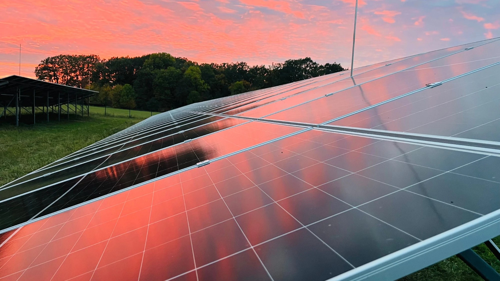
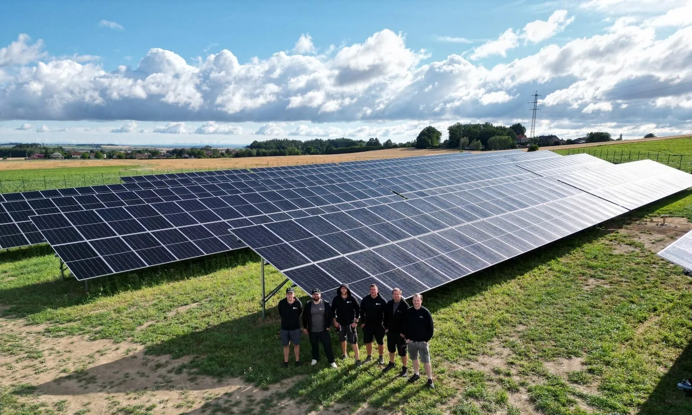

Simulace souladu
Požadavky, které metodika umožňuje nebo vyžaduje ověřit simulací, prokážeme na modelu výrobny v prostředí DIgSILENT PowerFactory.



BFK Systems · experti na velké FVE projekty
Poskytujeme komplexní služby od commissioningu a dispečerského řízení až po operativní servis po celé ČR.
Uvádíme do provozu velké fotovoltaické elektrárny, zapojujeme je do dispečerského řízení a rekonstruujeme VN a trafostanice. Oživujeme bateriová úložiště a soulad výroben s RfG dokládáme simulacemi i zkouškami na místě.
Služby
Zaměřujeme se na komerční a průmyslové fotovoltaické systémy a bateriová úložiště s působností po celé České republice.
Zajišťujeme profesionální uvedení velkých fotovoltaických elektráren do provozu, včetně veškerých testů a revizí.
Otevřít →Implementujeme moderní systémy pro efektivní řízení, regulaci a zapojení vaší elektrárny do energetické sítě.
Otevřít →Modernizujeme a rekonstruujeme vysokonapěťové části a trafostanice pro maximální výkon a bezpečnost FVE.
Otevřít →Jsme vaším partnerem pro komplexní realizaci rozsáhlých fotovoltaických parků a průmyslových instalací.
Otevřít →Ověření souladu výroben s RfG – simulace na modelu výrobny, zkoušky na místě a dokumentace pro distributora.
Otevřít →Oživení úložiště, řízení podle spotových cen, spolupráce s fotovoltaikou a ověření souladu pro distributora.
Otevřít →Ověření souladu
Bez doloženého souladu s RfG nevydá distributor souhlas s trvalým provozem výrobny. Od kategorie B1, tedy od 100 kW, se část požadavků ověřuje simulací a část zkouškami přímo na výrobně. Děláme obojí – i pro elektrárny, které jsme nestavěli. Více o simulačních zkouškách
Požadavky, které metodika umožňuje nebo vyžaduje ověřit simulací, prokážeme na modelu výrobny v prostředí DIgSILENT PowerFactory.
Ověření regulace činného a jalového výkonu, ochran, dálkového řízení a opětovného připojení přímo na výrobně.
Žádosti o UPOS a UTP, protokoly a Dokument výrobního modulu až do konečného provozního oznámení.
Kategorie A1 až D, postup, lhůty a podklady podrobně popisujeme na našem specializovaném webu.
simulacni-zkousky.czBESS
Úložiště musí správně spolupracovat s fotovoltaikou, sítí distributora i trhem s elektřinou. Oživíme ho, nastavíme řízení a doložíme distributorovi, co potřebuje.

Reference
Výběr našich úspěšně realizovaných projektů.


Další realizace – průmyslové a komerční FVE, AC rozvaděče i projekty ověření souladu.
Všechny referenceServis
Kromě špičkového know-how v realizaci projektů přinášíme i flexibilitu a spolehlivost v následné péči.
Náš tým servisních techniků pokrývá celou Českou republiku a je připraven rychle reagovat na vaše požadavky, ať jste kdekoli.
Chápeme, že každá hodina výpadku se počítá. Proto se zaměřujeme na maximálně rychlé a efektivní servisní zásahy.
Nabízíme individuálně nastavené servisní smlouvy, které vám zajistí pravidelnou údržbu, prioritní servis a klid na duši.
O nás
BFK Systems tvoří sehraný tým specialistů, kteří spojili své dlouholeté zkušenosti z energetiky, průmyslové automatizace a financí.
Technický ředitel, specialista na simulace a RfG
Specialista na průmyslovou automatizaci, FVE a MES/ERP integrace.
Obchodní a finanční ředitel
Expert na management, ekonomii a finance s praxí z vedení franšíz O2 a CZC.
Specialista VN a řízení FVE, simulace a RfG
Špičkový odborník na VN projekty, průmyslové řízení a SCADA aplikace.
Kdo jsme, co nás odlišuje a s kým spolupracujeme.
O násPoptávka
Máte zájem o spolupráci nebo potřebujete konzultaci? Napište nám, co řešíte – ozveme se do dvou pracovních dnů.
Čím více toho víme předem, tím přesněji odpovíme. Hodí se místo realizace, výkon elektrárny nebo úložiště, distributor a termín, se kterým počítáte.
Přejít na poptávkový formulář